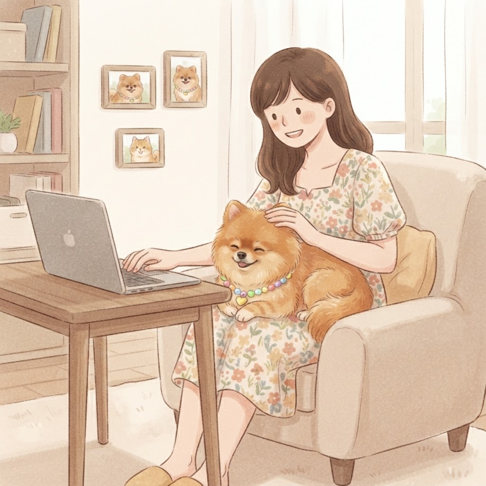
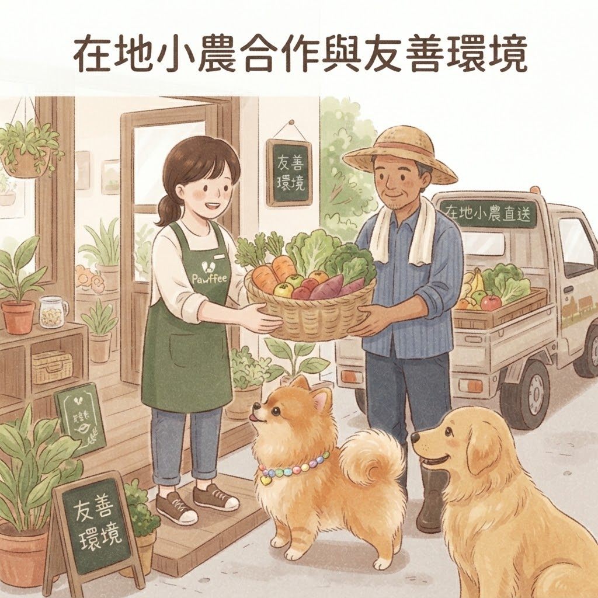
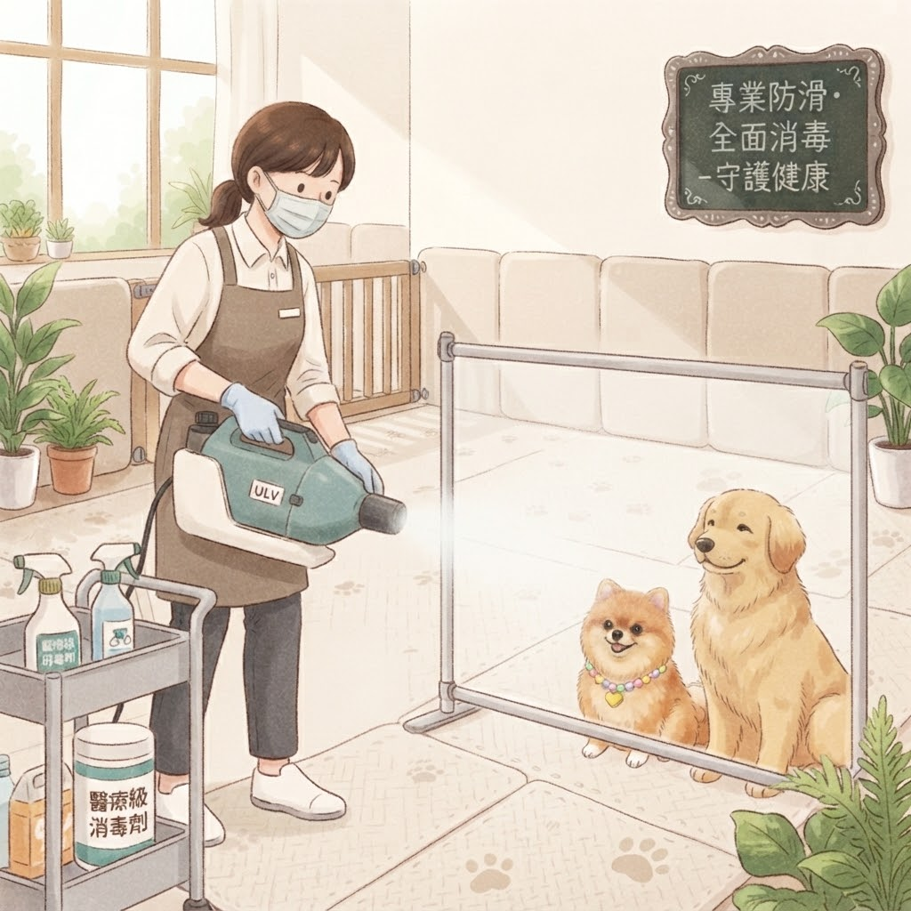
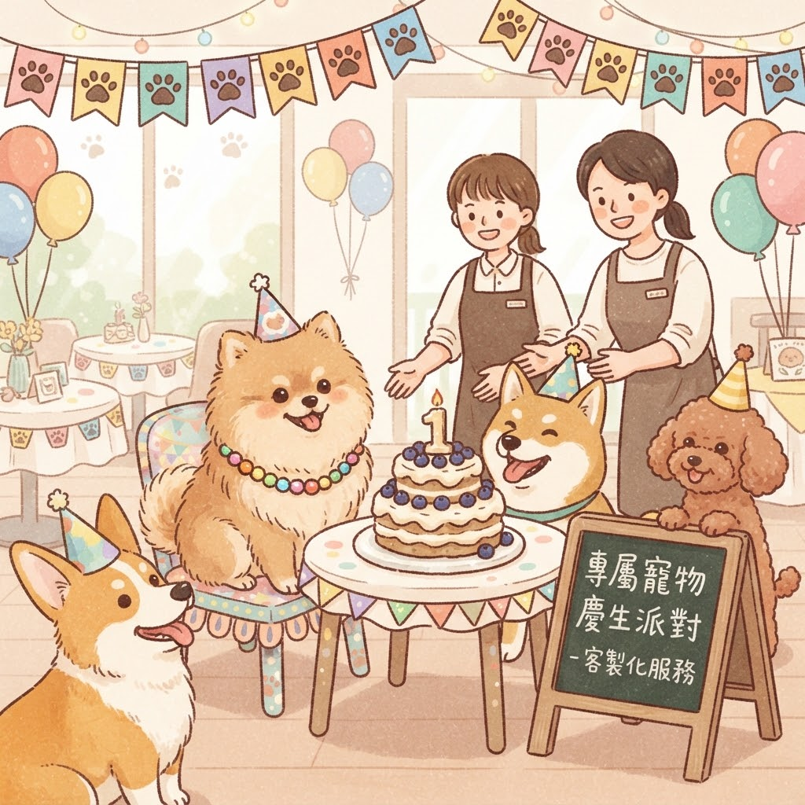

認識 Pawffee Cafe 的誕生故事與核心理念

嗨！這裡是 Pawffee Cafe，我是店長巧克力的頭號粉絲，也是這裡的創辦人 —— [您的名字]。
曾經，我只是一個每天埋首在數字堆裡的普通會計。每次出門上班，看著巧克力那雙依依不捨的大眼睛，心裡總是有千萬個捨不得。我心想：「難道我們人類的宿命就是加班，而毛孩的宿命就是在家癡癡地等嗎？」
不！我不要這種宿命！
於是，一個可愛又瘋狂的念頭閃過：既然不能帶巧克力去無聊的辦公室，那我就開一間可以讓牠光明正大「巡店」、我也能天天陪在牠身邊的咖啡廳吧！
這就是 Pawffee Cafe 的由來。這裡不只是一間咖啡廳，更是我和巧克力（以及所有毛孩）的夢想樂園。我們致力於打造一個人寵皆宜的溫馨空間，讓您在品嚐美味咖啡的同時，也能享受毛孩在腳邊撒嬌的幸福時光。不用再說再見，因為我們創立的初衷，就是為了——天天黏在一起！🐾

我們堅持支持台灣在地小農，嚴選新鮮、當季的食材入菜，不僅確保美味與營養，更減少食物里程。店內也盡量使用環保餐具與減塑包裝，為地球盡一份心力，實踐永續經營的理念。

毛孩的安全是我們的首要考量。全店鋪設專業醫療級防滑地墊，保護毛孩關節。我們更實施嚴格的清潔SOP，每日定期與客後全面消毒，使用寵物無害的清潔劑，確保環境衛生與健康。

我們深知毛孩是家人，值得特別的慶祝！我們提供專業的寵物慶生派對包場服務，從特製寵物蛋糕、派對佈置到攝影紀錄都能客製化安排。無論是生日或紀念日，都歡迎來 Pawffee 創造珍貴回憶。